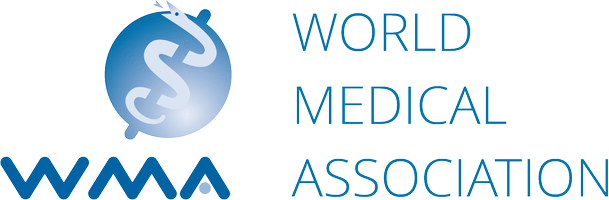

Наш центр является одним из лидирующих протезно-ортопедических центров в Европе. За время своего существования мы помогли сотням тысяч людей с ограниченными возможностями вернуться к полноценной жизни.
Мы стремится быть ведущим поставщиком протезирования и ортопедии в Европе. Совершенство - это не просто часть нашего имени, это часть нашего фонда.
- Комфортные условия восстановления пациентов
- Десятки грамот, дипломов и cертификатов
- Более 2000 пациентов доверяют нам свое здоровье
- Дипломированные, надежные врачи
- Уже 12 лет мы показываем наилучшие результаты реабилитации пациентов
- Мы используем самые продвинутые и качественные технологии
- Самые оснащенные залы и лаборатории восстановления функций движения


Мобильный уход
У вас есть возможность работать с нашей командой, не выходя из дома или вспомогательного медицинского учреждения. Поездка в нашу клинику не требуется для особого ухода.
Расширенные настройки
Мы принимаем вызов, когда получаем возможность исследовать технологии и настраивать протезы для уникальных случаев. Наши квалифицированные специалисты могут выйти за рамки стандартных технологий изготовления и создать новые протезы, столь же уникальные, как и вы. Креативность и находчивость в сочетании с инновационными технологиями приносят уникальный успех!
Быстрая доставка
Наша собственная производственная лаборатория обеспечивает быстрое выполнение работ, чтобы вы могли двигаться дальше! Мы прилагаем все усилия, чтобы ваш протез был доставлен в течение одной-двух недель после медицинского осмотра.
Преданная помощь пациентам
Каждый пациент находится в партнерстве с заботливой командой медицинских работников. Мы стремимся быть всегда доступными и внимательными к вашим потребностям в протезировании - от персонального координатора по уходу за пациентами до сертифицированного практикующего врача.





 8(029) 5521984
8(029) 5521984 пн-пт: 08.00-21.00
пн-пт: 08.00-21.00 Беларусь, г. Минск,
Беларусь, г. Минск,